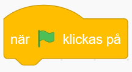
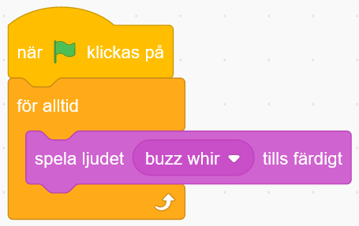
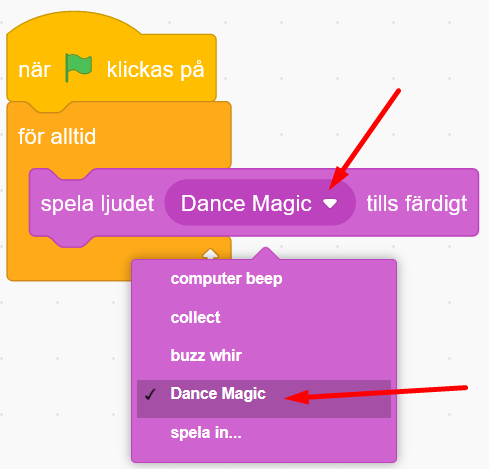
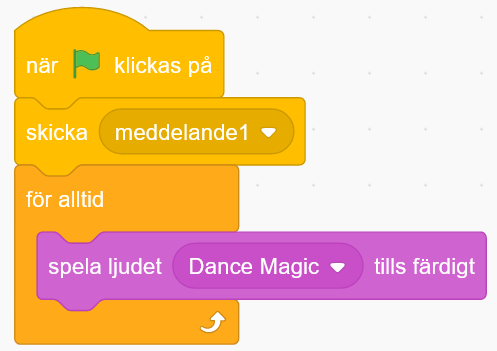
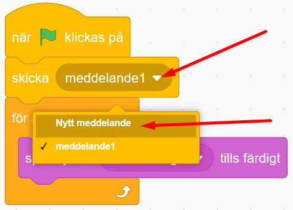
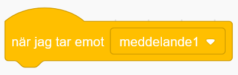
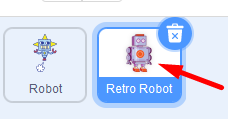
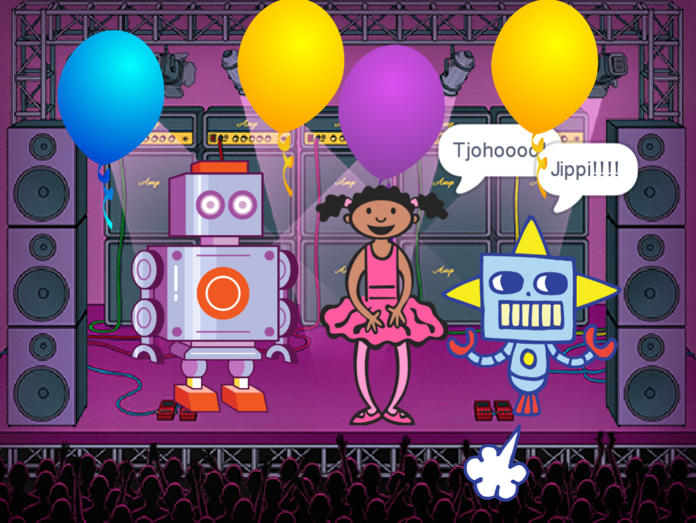

Koda robotar som dansar och låt musiken flöda! Här får du prova på en enkel och rolig uppgift att koda i Scratch. Ett mål med uppgiften är att du skall lära dig att använda meddelanden och funktioner.
Klicka på bilden nedan för att se ett exempelprojekt på hur ett projekt med dansande robotar kan komma att se ut (slå på ljudet):
Bläddra dig fram genom denna guide, steg för steg. Öppna även verktyget Scratch på sajten www.scratch.mit.edu där du kodar och skapar själva spelet utifrån Kodbokens instruktioner. Logga gärna in på Scratch för att kunna spara och dela projektet, så kan dina vänner få prova din robotdans. Ett konto på Scratch är gratis.
Är du redo att koda? Då börjar vi!
Först behöver du lägga till två robotfigurer som sen ska få dansa. Alla figurer man lägger in i Scratch kallas för sprajtar
VAD SKA JAG GÖRA?
INSTRUKTION HUR JAG GÖR STEG-FÖR-STEG:
Tryck på Skapa på Scratch startsida för ett skapa ett nytt projekt. Se gärna till att du är inloggad på Scratch, så kan du spara ditt projekt även.

Ser du katten på den tomma scenen till höger? Vi ska byta ut den till en ny robot-figur. Ta först bort katt-sprajten genom att klicka på den lilla soptunnan på den lilla kattbilden som finns under scenen. Då försvinner katten ur projektet och scenen blir tom.

Klicka på ikonen för Välj en sprajt som ser ut som en liten vit katt på en blå knapp, så här:

Välj en ny sprajtfigur som ska vara en robot. Se till att det är en robotsprajt som kan röra på sig (alltså en figur som rör sig när du för muspekaren över den i Scratch sprajtbibliotek).
Nu har du en robot på scenen.

Nu finns det två robotar på scenen. Dags att gå vidare.
VAD SKA JAG GÖRA?
INSTRUKTION HUR JAG GÖR STEG-FÖR-STEG:
Nu ska vi lägga till en bakgrundsbild som robotarna kan dansa runt på.
Klicka på ikonen för Välj en bakgrund som finns längst ned till höger under scenen.

Välj sen en bakgrund du gillar. I vårt exempelprojekt valde vi bakgrunden som heter "Concert".
Dra nu i robotfigurerna så de står bra på scenen. Ge dem lite utrymme att att röra på sig.
Om sprajtarna är för stora eller för små kan du ändra storlek på dem. Välj först en robotfigur genom att klicka på den lilla bilden av roboten under scenen. på. Under scenen ståpr det Storlek och bredvid står det 100 - alltså 100% full storlek på din robotfigur. För att ändra storleken, så klicka på siffran 100 och skriv in en lägre siffra för att minska robotens storlek eller högre siffra för att öka robotens storlek.

Nu har du två robotfigurer och en bakgrund. Välj den robotsprajt som du vill börja koda först. Då gör du såhär:
Klicka på den lilla sprajtbilden som finns under scenen.

Dubbelkolla att sprajtfiguren du nyss valde även syns i hörnet av den vita ytan i mitten av Scratch. Då är du säker på vilken sprajt som är aktiverad.

Nu är du redo att ge roboten lite musik att dansa till.
Nu ska vi lägga till musik.
VAD SKA JAG GÖRA?
INSTRUKTION HUR JAG GÖR STEG-FÖR-STEG:
Först ska vi välja musik som vi gillar. Gå först till fliken som heter Ljud i övre vänstra hörnet av Scratch. Nu kommer du in i en ljudstudio.

Klicka på den blå knappen längst ned till vänster som heter Välj ett ljud. Nu kommer du in i Scratch ljudbibliotek.
Klicka på kategorin överst som heter loopar. För att lyssna på de olika ljuden håller du muspekaren över de lila PLAY-symbolerna. För att lägga till ett ljud du vill ha i ditt projekt, så klickar du så mitt på ljudets ruta. Vi har valt ljudet Dance Magic i vårt exempel.

Nu ska du gå ut ur ljudstudion. Klicka då på fliken som heter Kod i övre vänstra delen av Scratch. Då kommer du tillbaka du kodblocken och skriptytan igen och kan koda in musiken du nyss valde.

Nu är det dags att börja koda.
VAD SKA JAG GÖRA?
INSTRUKTION HUR JAG GÖR STEG-FÖR-STEG:
För att musiken ska kunna spelas behöver vi programmera projektet med hjälp av Scratch kodblock. Koden som vi bygger ihop kallas för ett skript.
För att kunna starta projektet behöver vi lägga till ett startblock. Under tema HÄNDELSER finner du blocket när GRÖN FLAGGA klickas på. Ta tag i detta block och dra in det på den stora vita ytan i mitten av Scratch och lägg det där. Den stora vita ytan kallas även för skriptyta.

När vi startar projektet vill vi att musik spelas upp. Den ska spelas om och om igen för alltid. Då behöver vi koda in en loop. Under tema KONTROLL lägger du till blocket för alltid. Fäst det direkt under första blocket när GRÖN FLAGGA klickas på, så de pusslar ihop sig såhär:

Nu ska vi lägga till musiken i skriptet. Från tema LJUD drar du in blocket spela ljudet ___ tills färdigt och lägg in detta block inuti loopen. Då ser det ut såhär på skriptytan:

Testa koden! Klicka på den gröna flaggan ovanför scenen. Vad händer? Hörs det ljud? Blev det samma ljud som du ville ha? Tänk på att du kan behöva sätta på högtalarna och kanske även höja volymen om den är för låg.
Om du vill byta ut ljudet i blocket till ett annat ljud så gär du såhär: Lägg först till ett nytt ljud och klicka sedan på ljudblocket spela ljudet ____ tills färdigt. Välj sedan ljudet du vill ha i listan som kommer fram. Se bilden nedan:

Testa koden! Klicka på den gröna flaggan ovanför scenen och testa att köra koden. Vad händer? Spelas din nya musik nu istället för det gamla ljudet? Blev det som du ville? Du kan alltid byta till annan musik på samma sätt som du nyss gjorde i stegen ovan.
Nu har vi bra musik för robotarna att dansa till! Dags att koda in dansen!
Roboten behöver behöver veta om när den ska börja dansa. Vi kodar in ett meddelande till den.
VAD SKA JAG GÖRA?
INSTRUKTION HUR JAG GÖR STEG-FÖR-STEG:
I Scratch kan man koda att sprajtarna skickar meddelanden till varandra. Nu ska vi skapa ett meddelande får robotarna att dansa. Gör såhär:
Under tema HÄNDELSER drar du in blocket skicka meddelande1. Lägg blocket direkt under startblocket när GRÖNA FLAGGAN klickas på. Då ser skriptet på kodytan ut såhär:

Nu ska vi skapa ett nytt meddelande. Klicka på den lilla pilen bredvid texten meddelande1 i kodblocket du just lade in. Klicka sen på Nytt meddelande i menyn som kommer fram.

Skriv in ordet Dansa i textrutan och klicka på OK. Nu ändras texten i kodblocket så det står skicka Dansa.

Vårt meddelande Dansa är nu färdigt, men det behöver kunna tas emot någonstans för att fungera. Vi behöver koda vidare.
Vi skapar ett nytt skript på kodytan, som ska få roboten att börja dansa när den tar emot meddelandet Dansa. Från tema HÄNDELSER drar du in startblocket när jag tar emot meddelande1 och lägger det någonstans på skriptytan.

Nu ska vi välja vilket meddelande blocket ska ta emot. Klicka på den lilla pilen i blocket och välj sen meddelandet Dansa från menyn. Nu ändras texten i ditt block till när jag tar emot Dansa.

Nu ska vi lägga till en loop. Från tema KONTROLL drar du in kodblocket för alltid. Sätt fast blocket under blocket som heter när jag tar emot Dansa, så det ser ut såhär:

Nu har vi kodat ett meddelande som gör att roboten vet när den ska börja röra på sig. Men den vet fortfarande inte hur den gör för att dansa. Vi kodar vidare!
Dags att få roboten att röra på sig.
VAD SKA JAG GÖRA?
INSTRUKTION HUR JAG GÖR STEG-FÖR-STEG:
Nu ska vi få sprajten att byta klädslar, alltså att byta mellan olika bilder av sprajtens olika positioner och rörelser. Då kommer sprajten att animeras, alltså se ut att ändra utseende och röra på sig. Från tema UTSEENDE drar du in blocket nästa klädsel och lägger det inuti loopen för alltid. Om du nu startar koden kommer sprajten att byta klädslar om och om igen, jättesnabbt. Testa att köra koden!

Tänk på! En del sprajtar saknar fler klädslar och kommer därför inte fungera med koden ovan. Du vet om du har en sprajt med klädslar om den rörde på sig när du valde ny sprajt i Scratch sprajtbibliotek. Du kan även kolla sprajtens olika klädslar om du klickar på fliken som heter Klädslar i övre vänstra delen av Scratch. Om sprajten har fler än en klädsel så ser du dem nu i vänstra delen av Scratch, med flera bilder av sprajten under varandra. Gå sen tillbaka till kodytan på fliken bredvid som heter Kod. Se bild nedan:
Bild till tipset ovan

Testa koden! Klicka på den gröna flaggan ovanför scenen och testa koden. Vad händer? Byter sprajten mellan klädslar? Går det lite för snabbt?
För att göra bytet mellan olika klädslar långsammare kan vi lägga in en liten paus mellan varje byte. Från tema KONTROLL drar du in blocket vänta 1 sekunder. Lägg in det inuti för alltid-loopen. Klicka sen på variabeln med siffran 1 i blocket och ändra till 0.25 för kortare paustid.

Tänk på! I Scratch skrivs siffror med en punkt ( . ) mellan heltal och decimaler, inte med kommatecken ( , ). Exempelvis O.25. Annars fungerar inte koden för den instruktionen.
Testa koden! Klicka på den gröna flaggan ovanför scenen och testa koden. Vad händer? Hörs musiken? Dansar robotsprajten? Går bytet mellan klädslarna lagom fort? Testa att ändra till olika lång väntetid mellan sprajtens klädselbyten så det blir som du vill ha det.
Nu finns det kod för att din sprajt ska kunna röra på sig och dansa runt till musik! Det är dags att få den andra robotsprajten att också dansa!
Nu vill vi att båda robotarna ska dansa tillsammans! Du kommer att få se varför skicka och ta emot meddelande är så bra att använda. Då börjar vi koda!
VAD SKA JAG GÖRA?
INSTRUKTION HUR JAG GÖR STEG-FÖR-STEG:
Klicka på de små bilderna av sprajtarna under scenen för att byta till den andra sprajten som du vill koda. Nu får du fram den andra sprajtens tomma skriptyta, där finns ju ännu inga kodblock inlagda. Dax att börja koda.

Från tema HÄNDELSER drar du in kodblocket när jag tar emot Dansa. Lägg det någonstans på kodytan för den andra robotsprajten.

Från tema KONTROLL drar du in en för alltid-loop. sätt den direkt under det första kodblocket.
Nu ska vi få roboten att glida till olika ställen på scenen. Från tema RÖRELSE drar du in kodblocket glid 2 sekunder till slumpmässig position. Lägg detta block inuti för alltid-loopen.

Tips! Du bestämmer själv vad som ska hända när sprajtarna tar emot meddelandet Dansa. Sprajtarna kan röra sig genom att byta klädslar eller säga något med en pratbubbla från tema UTSEENDE, kanske glida till ny position från tema RÖRELSE? Testa dig fram!
Testa koden! Klicka på den gröna flaggan ovanför scenen och testa ditt projekt. Vad händer? Rör sig båda robotarna? Dansar de lagom fort? Ser dansen och projektet ut som du vill? Vill du att robotarna ska göra något mer? Du kan alltid ändra i koden och bygga vidare med mer kodbitar.
Nu ska vi se till att själva bakgrunden får en snygg färgeffekt!
VAD SKA JAG GÖRA?
INSTRUKTION HUR JAG GÖR STEG-FÖR-STEG:
Klicka på den lilla bilden av din bakgrund nere till höger under ditt projekt där det står Scen. Då kommer skriptytan för din bakgrund fram, där du också kan lägga in kod. Bakgrunden kan inte röra på sig, men den kan bytas ut till andra bakgrunder efter ett tag eller ha olika färgeffekter på sig så den blir cool.

Nu kodar du scenen med bakgrundsbilden, och har alltså en ny, tom skriptyta att koda på. Från tema HÄNDELSER drar du in meddelandeblocket när jag tar emot Dansa Lägg den på bakgrundens tomma skriptyta.
Från tema KONTROLL drar du in blocket för alltid, alltså en loop, och fäster det under blocket när jag tar emot Dansa.
Från tema UTSEENDE drar du in blocket ändra färgeffekten med 25 och lägger den inuti för alltid-loopen.

Tips! Vill du att bakgrunden ska växla färg långsammare? Då kan du lägga till ett vänta-block från tema HÄNDELSER inuti loopen. Kanske 0.25 sekunder är lagom lång väntetid?
Testa ditt projekt! Ändrar bakgrundsbilden på scenen färg? Blev det som du ville?
Nu är ditt projekt färdigt och robotarna dansar loss i ett härligt party! På nästa sida får du förslag på hur du kan pynta vidare och lägga till mer saker i ditt projekt!
Grattis, nu har du gjort klart uppgiften. Bra kodat!
Glöm inte att spara ditt projekt! Om du är inloggad på Scratch kan du spara ditt projekt. Döp det även till något du gillar, kanske till Robotdans? Namnet kan du skriva in högst upp. Klicka gärna på knappen Dela, så kan andra se ditt projekt. Om du skickar webadressen (projektets Url) till vänner och familj så kan de testa projektet.

Testa ditt projekt och låt gärna andra få prova!
Har du tid över? Här kommer utmaningar för dig som vill fortsätta.
Kan du ändra i skripten för dina sprajtar så att de blir mer olika och roliga? Kanske lägga till andra sprajtar? Pratbubblor? Var kreativ och våga prova dig fram. Du kan alltid ändra om och skapa nytt med kod!

Testa till exempel att:
Lägga till pratbubblor på sprajtarna så de säger olika saker
Ändra storlek på sprajten så den blir exempelvis större eller mindre medan musiken spelas
Lägga till rotation så att sprajtarna vänder sig runt, runt
Ändra hur fort sprajtarna dansar
Rita till objekt eller ändra färger på olika klädslar i dina sprajter
Kan du hitta fler sätt att göra dom mer unika?
Vad är en loop bra till när man programmerar?
Vad är ett meddelande i koden?
Vad kan du använda ett meddelande till?